Humanitarian Engineering for Energy for Displacement (HEED)
1 User Guide
This is the HEED-RER tool user guide. It is designed to provide an accessible step-wise explanation for users on how to navigate the Excel Tool spreadsheet.
https://github.com/heedproject/rert Version 1.2
Developed by: Rembrandt Koppelaar (Scene Connect) Reviewed by: Jonathan Nixon (Coventry University)
1.1 Tool use background
The Humanitarian Engineering and Energy for Displacement (HEED) project aims to understand the energy needs of forcibly displaced people to increase access to safe, sustainable and affordable energy.
The HEED Renewable Energy Recommendations tool (HEED-RERT) for Camps:
The first version (v1) of the tool was built by Scene Connect with support from Coventry University and Practical Action between June 2018 and August 2019.
It aims to provide technology recommendations based on energy-economic-environment-health performance indicators to provide support for how best to increase energy access in refugee camps and improve sustainability for i) Cooking Energy, ii) Household Lighting and Electricity, iii) Community/Camp central Lighting and Electricity.
Users engage with an Excel spreadsheet where they answer questions to describe the population of the camp, as well as the camp energy infrastructure and energy use of families therein. They can also enter technical data for particular renewable energy and cooking options. This allows the user to localise the results into the local context as much as possible.
Results are presented in the form of an indicator dashboard where different technology options can be compared with their performance indicator scoring.
It is recommended for each camp (or part of a camp) to save the spreadsheet with a new name as its own self-contained version. To this end information can be filled in on the overview tab in the sheet.
The tool has been built with Excel 2018 and Excel 2019 versions. It is not backwards compatible with older versions at this time. Please use recent versions of Microsoft Excel to use it.
Feel free to modify and adjust the tool for your own purposes. HEED-RERT is built on Open Source principles
1.2 Five Steps in HEED-RER Tool Usage
1.2.1 Cooking Stove & Fuel Combinations currently comparable
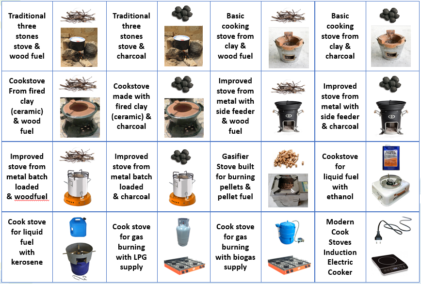
1.2.2 Household Lighting & Electricity options currently comparable in RERT v1
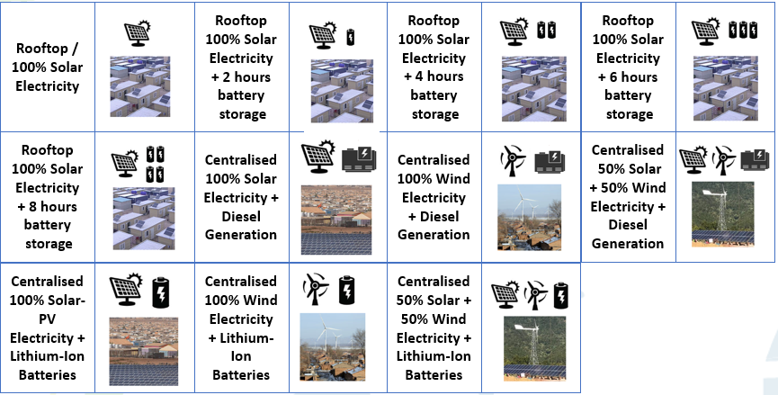
1.2.3 Camp community / infrastructure energy currently comparable in RERT v1
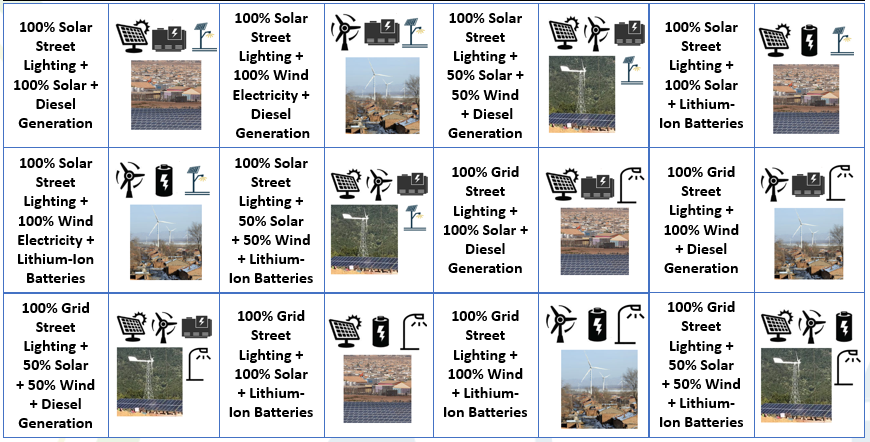
1.2.4 Dashboard Result: Energy Technologies Compared on Indicators
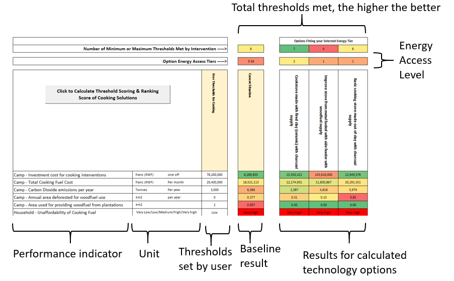
1.2.5 The Tool Identifies the Top 3 Best Scoring Options
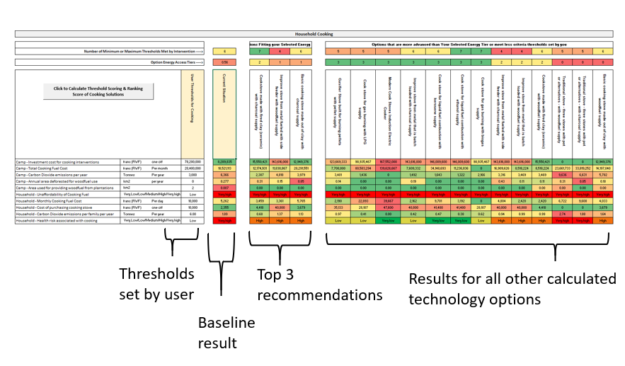
1.3 Using the tool
1.3.1 Step 1 – Opening the Spreadsheet
You need to enable “macro’s” when opening the spreadsheet when prompted otherwise the results cannot be calculated.
For Help about this see the Microsoft Office Documentation here:
https://support.office.com/en-us/article/enable-or-disable-macros-in-office-files-12b036fd-d140-4e74-b45e-16fed1a7e5c6
1.3.2 Step 2 – Fill in Overview – START HERE - tab
Fill this in to keep track of saved versions
Fill this in with country, camp name and which currency to use in the calculations
Select if you want to look only at i) cooking energy use, ii) at household electricity and lighting, iii) community/central lighting & electricity, or iv) all three of these
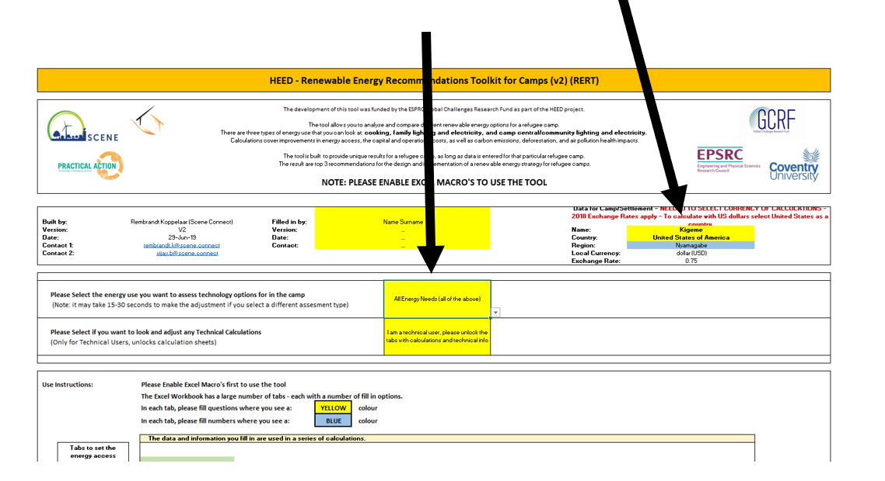
1.3.3 Step 3 – Select Tool Modes
Select here if you are a technical user or a regular user. If you select the technical user option additional spreadsheet tabs will be unlocked and made visible:
Calc_Energy_Demand – containing energy demand calculations
Calc_Energy_Supply – containing demand-supply matching calculations
Calculation_KPIs – containing the calculations for performance indicators
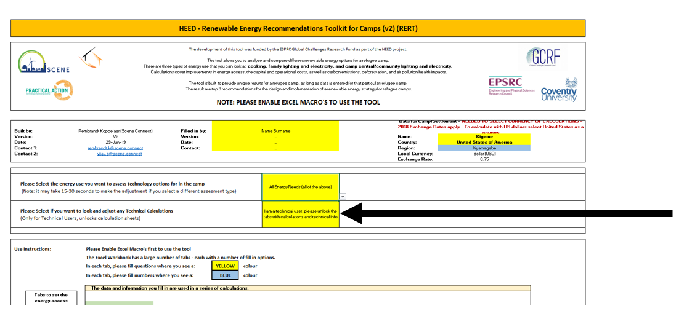
1.3.4 Step 4 - Guide to Provide Camp Information – where
To create an accurate baseline of the energy situation in the Entire Camp, you need to answer close to 100 questions. These are divided in five main areas (spreadsheet tabs):
#1CampMapping, lists 9 questions about the number of people living in the camp, how many households operate businesses, its geography and the availability of vacant space,
#2CentralEnergyNeeds, lists 20 questions about camp buildings, the source of electricity and heat, the camp’s food centres, water supply, and street lights.
#3HouseholdCooking, lists 10 questions about cooking stoves and fuel use
#4 HouseholdElectricityLighting, lists 27 questions about use of mobile phones, lighting options available, and electrical appliances.
1.3.5 Step 5 - Guide to provide Camp Information - How
There are two types of questions to fill in for each camp
- Multiple choice (yellow fields) with a selection drop down list:
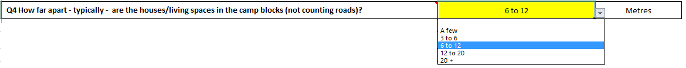
- Open questions (blue fields) where you need to fill in a quantity or a name
In some cases you may be prompted that you have filled in an answer that falls outside of the range that is possible (for example 12 out of 10 is not possible). If you fill in more or less than 10 when the totals should sum up to 10, you will be prompted to make sure as few errors as possible are entered.
1.3.6 Step 6 – Calculate Results to obtain a Baseline
The results are calculated in the “results” tab separately for each type of energy use:
Cooking Energy,
Household Lighting and Electricity,
Community Lighting and Electricity.
After you have filled in the answers to the tool questions for the first time, you can go to the results section and click on the calculate buttons.
Buttons for calculating results:
1.3.7 Step 7 – Read the Baseline Performance
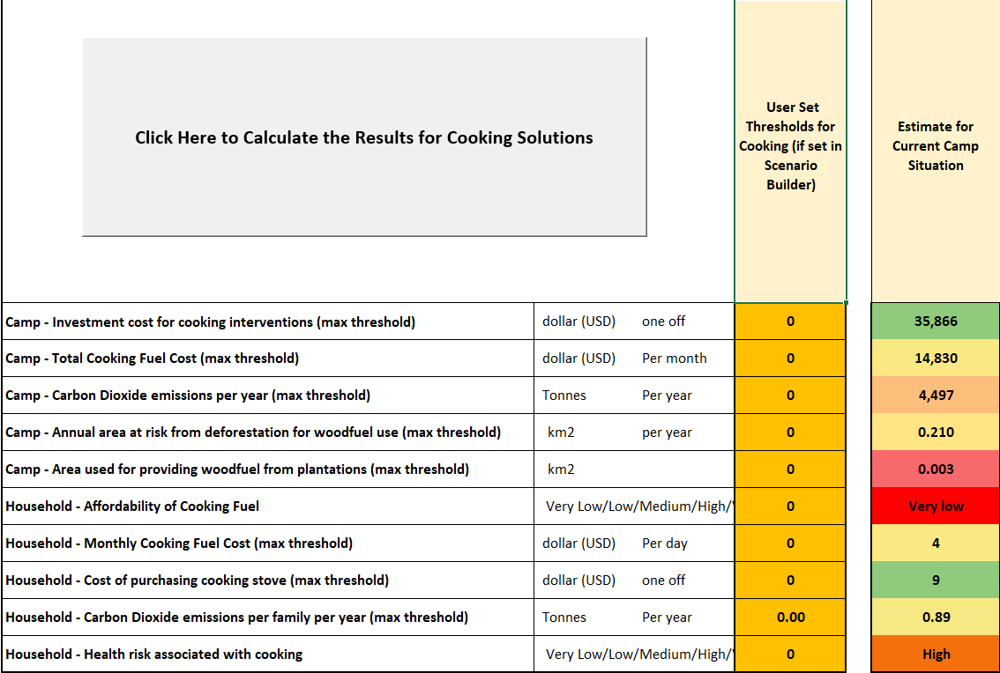
Baseline Performance Of Current Camp Situation
Cost 35,866 USD if existing stoves were to be bought again
Cost 14,830 USD to buy stove fuel per month
4,497 tonnes CO2 emissions per year from cooking stoves in camp
And so forth for all indicators
1.3.8 Step 8 – Set Energy Access Tier to Achieve
In the tab “Scenario Builder” you can set the Energy Access Tiers for Cooking, Lighting, Street Lighting, Electricity and Heating that the recommendations need to provide for:
The impact is that the 3 main recommended solutions will be selected within the desired tier of energy access (e.g. if selecting tier 1 the recommendations will be tier 1 options)
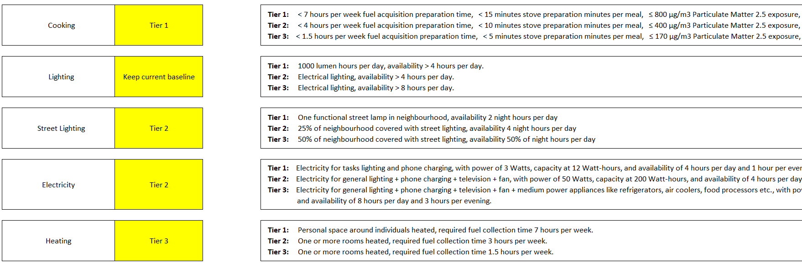
1.3.9 Step 9 – What are Energy Access Tiers?
The Energy Access Tiers framework was setup by ESMAP (Energy Sector Management Assistance Programme) to provide a common approach to understand the energy access for different types of energy use. It contains tables that outline under which conditions people or families achieve energy access levels ranging from 0 to 5 (see table below for the different type of indices).
More details can be found here: https://www.esmap.org/node/55526
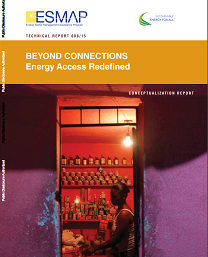
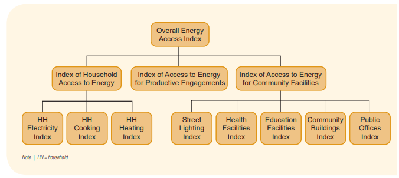
1.3.10 Step 10 – Set thresholds for indicators
In the tab “Scenario Builder” you can also set the minimum or maximum thresholds that a solution needs to take into account. Each technology solution is weighted on how many threshold option set by you it meets.
If there are 10 performance indicators (like for Cooking in v1) each cooking stove + fuel solution can receive a score between 0 and 10 points
Thresholds can be compared and set relative to the baseline situation. For example set a threshold that the cooking fuel cost per month should be at maximum as high as the current expenditure, or that the carbon dioxide emissions should be 50% lower in tonnage of CO2 per year.
Example Threshold Levels for Cooking Solutions to meet that are set by the user:
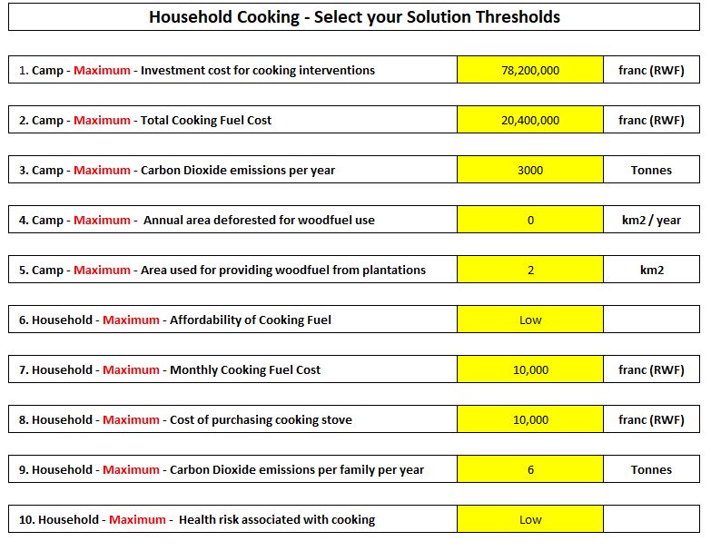
1.3.11 Step 11 – Re-run results with your Energy Access Tier + Thresholds
You can now re-run the results:
Cooking Energy,
Household Lighting and Electricity,
Community Lighting and Electricity.
1.3.12 Step 12 – Interpret your Results
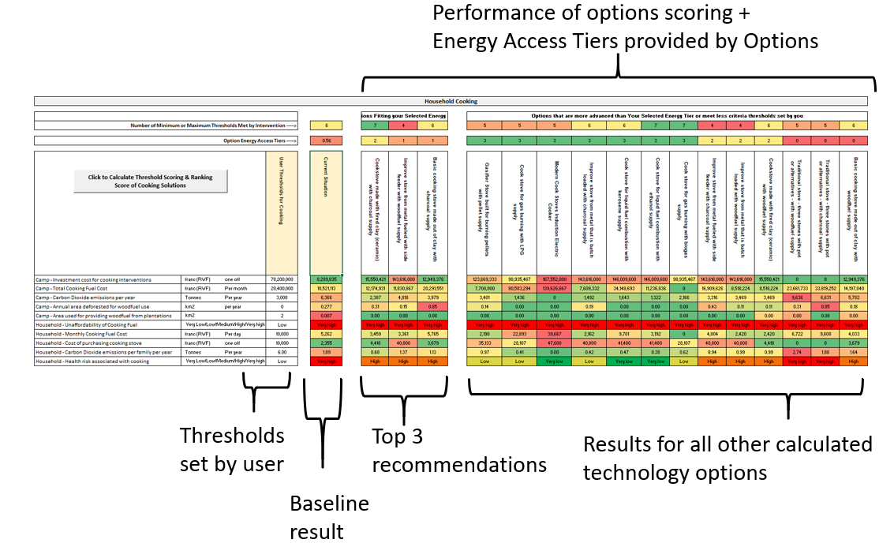
1.3.13 Step 13 – Make specific changes in technology specifications
In addition to the camp questions, in the “Parameter-Listing tab there are several hundred values that define the technologies compared in the model and the calculations.
For example, if you have specific data for a specific stove you can adjust that here, if you have specific information about the cost of solar, if you have data on the energy use of appliances, and so forth.
Any value in green can be edited here directly and this will change the calculations. Once editing a value here (or in the camp questions) you can run the results again and get an updated insight in the performance of the solutions.
1.4 Overview of Models and Methods used
The user guide explained the usage process for the RER tool. More detailed technical information can be found in the technical documentation made to describe the calculations carried out in the tool. An overview of the calculation steps is shown in the figure below.
Please see the technical documentation for more details
2 Technical Documentation for Tool Calculations
Authors: Rembrandt Koppelaar (Scene), Jonathon Nixon (Coventry University)
2.1 Overview of Calculation Flow
The calculation setup is a linear flow based on five calculation “modules”, and three mechanisms by which the user adds data and conditions for the calculations (see Figure 1). The setup is designed without iteration in a demand-driven manner, in that supply is calculated to match demands, in contrast to an equilibrium-based calculation. Any iterations will be carried out by the user, by enabling a real-time output change due to user input alterations.
Figure 1. Calculation Flow of the RERT Tool
Each of the calculation steps are described in the next sections including the parameters and user inputs as applicable. The energy demand calculations (B) are described in section 2, the calculations of supply options to meet the demands (C) are described in section 3. The calculation of performance indicators for energy supply options (D) is described in section 4, and the threshold grouping & ranking based on energy access tiers and indicator thresholds (E) is described in section 5.
2.2 Energy Demand Calculations
Generalised Equations for Energy Use Calculations
Energy use E in kWh is calculated for sets of devices with i = 1,2\ldots nas an index for the category of device, including cooking, lamps, streetlights, electric appliances, and electricity generation devices. The index j = 1,2\ldots n denotes the sub-type within a category, such as the type of cooking device for example, and k = 1,2\ldots n is an index for energy carrier type used including individual fuels and electricity. Energy use per period of time is thereby calculated as:
E_{\text{ijk}} = \ \frac{c_{\text{ijk}} \cdot \ u_{\text{ij}} \cdot \sum_{t}^{n}A_{\text{ijt}}}{\varepsilon_{\text{ijk}}} (1)
With \varepsilon_{\text{ij}} as the efficiency in %, c as a capacity parameter typically in kW, u as a utilisation parameter indicating the proportion of capacity used, A_{\text{ij}} as a variable for average daily device use in hours. The time index t = 1,2\ldots n indicated the number of days in a month to obtain monthly device energy use.
Fuel used in weight or volume unit can then be calculated as:
F_{\text{ijk}} = \frac{\text{\ E}_{\text{ijk}} \cdot 3.6}{f_{\text{ijk}}} (2)
With f_{\text{ijk}} as a variable for fuel energy content per fuel type \text{k\ }in MJ per kilogram for solid fuels or MJ per m3 for gaseous fuels.
Energy Use – Cooking Specifics
Cooking energy demand is calculated in an integral manner with supply, as the energy need is highly interrelated with the type of stove used and the efficiency of fuel utilisation. First, the tool estimates which cooking devices are used based on how common they are (X,Y,Z, stoves of type A,B,C, per 10 families) and what type of fuels are used for these stoves. Based on the questions posed to the user and particular answers the current fuel requirements are calculated. The equation (1) above for cooking devices i = c is used to calculate cooking device energy usage. Fuel used for cooking in weight or volume unit is calculated with equation (2) as applicable. Cookstove fuel energy content data was taken from Vianello et al. (2016).[1]
The combination of stoves and fuels results in a simplified approximation of the amount of “fuel stacking” that occurs, by allowing the user to set different fuel ratio’s per stove that is utilised on average. Fuel stacking is defined as the alternation between use of different fuels due to various factors including meal types, fuel prices, and disposable cash available.[2]
To establish the type of cooking devices \text{j\ }and their range of usable fuels k the literature was consulted. The aim was to find distinct devices by energy carrier type and efficiency parameter \varepsilon_{\text{ijk}}. First, international standards to make cookstoves comparable in terms of performance were consulted, of which the most prominent is the IWA standard was developed by the Global Alliance for Clean Cookstoves (GACC). The IWA standard classifies cooking stoves by tiers from 0 to 4 based on their efficiency, carbon monoxide and particular matter emissions (outdoor and indoor), and use safety. This standard was adopted to link to the efficiency parameter \varepsilon_{\text{ijk}} and for calculating air pollution/health indicators.
Second, studies with a comprehensive overview of different classifications of cooking stoves (traditional, improved, rocket etc.) were consulted.[3] As well as the categories of legacy and basic ICS, Intermediate ICS, Advanced ICS and Modern fuel stove as per Vianello et al. (2016)[1] Third datasets were analysed for cooking stoves in terms of their design, fuel use and IWA standard rating from lab and field tests. The main data sourced used was The Clean Cooking Alliance online cookstove catalogue with 476 stoves of which 81 have IWA efficiency ratings, and 60 have IWA indoor-emission ratings (see for the online catalogue: catalog.cleancookstoves.org). These were further supplemented with operational testing data for 15 different cookstoves on IWA parameters under lab conditions from Dean et al. (2015).[4] And with data from operational testing of fifty cooking stoves for efficiency, CO emissions and PM emissions by MacCarty et al. (2010).[5]
Standard categories for cookstoves as used in Viannelo et al. (2016)[1] were not found helpful, to make a meaningful distinction between the efficiency of cookstoves. Cookstoves in particular categories were not found to correlate with IWA tiers of efficiency and indoor emissions, plausibly due to the fluidity of the categories in defining the stoves the variety of quality of builds within these categories. The data analysis did yield relevant results, however, resulting in a new classification of 8 types of cookstoves. These are distinct in their fuel use and IWA efficiency tiers, so as to form a meaningful classification for household cookstoves in terms of IWA efficiency and IWA indoor emissions. The subsets were defined based on manually analysing distinct IWA values based on specific properties of cookstoves in the above datasets, such as the difference between batch-loaded and side-fed cookstoves, which together result in the classification as per table 2 and 3 below for IWA efficiency, and IWA indoor-emissions.
The capacity values for cookstoves c_{i = c,jk} and utilisation parameter u_{i = c,jt} were in the first iteration simplified to a standardised value of 1.0 kW for cookstove capacity, and an assumed 0.8 estimated for utilisation, indicating 80% utilisation of a cookstove’s capacity as it will not be fully loaded with wood or another fuel. The time of use variable value A_{\text{ijt}}was approximated at 2.5 hours per day assuming three meals per day. Analysis of these parameters has been carried out by Johnson & Chiang (2015)[6], Ruiz-Mercado et al. (2012)[7], Bentson et al. (2013)[8], Pillarisetti et al. (2014)[9].
Categorisation of stove subtypes:
Stoves built with (unfired) clay components are typically of a tier 0 to 1 IWA efficiency and a 0 to 1 IWA indoor-emissions, unless they have advanced features such as a chimney.
Stoves that are built with ceramic components (heated clay) in a metal housing are typically of a tier 2 IWA efficiency and a 0 to 1 IWA indoor-emissions efficiency.
Stoves that are side-fed are typically of a Tier 0 to 2 IWA efficiency and 0 to 2 IWA indoor-emissions. If they have a fan they are on the higher spectrum within these IWA efficiency and indoor-emissions ranges.
Stoves that are batch-loaded made from metal and burn on charcoal typically have a 3-4 efficiency tier and a 3-4 indoor emissions tier.
Stoves that are batch-loaded made from metal and burn on wood typically have a 2 IWA efficiency tier and a 0-1 indoor emissions tier.
No substantial distinction was found between IWA tiers for stoves with a fan as a single variable.
Fuels specific:
Ethanol/Alcohol burning stoves typically are of a Tier 4 efficiency and Tier 4 indoor-emissions category
Stoves that can also burn on crop residues typically have a 0-2 IWA efficiency and 0-2 IWA indoor emissions.
Stoves that burn on liquid petroleum gas typically have a 3 IWA tier for efficiency and indoor emissions.
Stoves that burn pellets with a gasifier typically have a 3 to 4 IWA tier for indoor emissions, and a 3 to 4 IWA efficiency for high power thermal efficiency, whilst their low power specific consumption tier can vary between 0 and 4 depending on design.
Stoves that burn on briquettes vary from 0 to 2 IWA Tier for efficiency and 0-2 Tier for indoor emissions.
Note that more data is required to properly analyse these findings (outside of the scope of the renewable energy recommendations tool effort/HEED project) as the datasets utilised and available are too limited to draw robust conclusions.
Table 1. Overview of cook-stoves implemented in the model in relation to utilisable fuel types
| Fuel type Cookstove | Wood | Charcoal | Pellets | Ethanol | Kerosene | LPG | Biogas | Electricity |
|---|---|---|---|---|---|---|---|---|
| Traditional three stone with pot stove | X | X | ||||||
| Unfired Clay Stove | X | X | ||||||
| Ceramic Clay stove in metal housing | X | X | ||||||
| Side-fed metal stove | X | X | ||||||
| Batch-loaded metal stove | X | X | ||||||
| Pellet gasifier stoves | X | |||||||
| LPG/Bio-gas stoves | X | X | ||||||
| Liquid Fuel stoves | X | X | ||||||
| Electric cooking stoves | X |
Table 2. overview of cook-stoves implemented in the model in relation to IWA efficiency tiers
| Fuel type Cookstove | Wood | Charcoal | Pellets | Ethanol | Kerosene | LPG | Biogas | Electricity |
|---|---|---|---|---|---|---|---|---|
| Traditional three stone with pot stove | 0 | 0 | ||||||
| Unfired Clay Stove | 0-1 | 0-1 | ||||||
| Ceramic Clay stove in metal housing | 2 | 2 | ||||||
| Side-fed metal stove | 0-2 | 0-2 | ||||||
| Batch-loaded metal stove | 2 | 3-4 | ||||||
| Pellet gasifier stoves | 3-4 | |||||||
| LPG/Bio-gas stoves | 3 | 3 | ||||||
| Liquid Fuel stoves | 4 | 4 | ||||||
| Electric cooking stoves | 4 |
Table 3. overview of cook-stoves implemented in the model in relation to IWA indoor-emission tiers
| Fuel type Cookstove | Wood | Charcoal | Pellets | Ethanol | Kerosene | LPG | Biogas | Electricity |
|---|---|---|---|---|---|---|---|---|
| Traditional three stone with pot stove | 0 | 0 | ||||||
| Unfired Clay Stove | 0-1 | 0-1 | ||||||
| Ceramic Clay stove in metal housing | 2 | 2 | ||||||
| Side-fed metal stove | 0-2 | 0-2 | ||||||
| Batch-loaded metal stove | 0-1 | 3-4 | ||||||
| Pellet gasifier stoves | 3-4 | |||||||
| LPG/Bio-gas stoves | 3 | 3 | ||||||
| Liquid Fuel stoves | 4 | 4 | ||||||
| Electric cooking stoves | 4 |
Energy Use – Household Lighting
Lighting energy needs are calculated on the basis of equation (1) with i = l with subtypes j using energy carriers k. Capacity of a light source for lighting c is expressed in Wh/hour, the \varepsilon parameter is not utilised here and set to 1. Values for Average use per day in hours\text{A} can be entered by the user and are pre-loaded with literature values from surveys.[10] The utilisation rate u is set to 0.95 indicating the frequency of using the lighting source.[10] In case of kerosene lamps, fuel use can be calculated using equation 2 to obtain litres of Kerosene used per family per month.
Capacity values for solar lighting devices were obtained from specification sheets in the lighting global database (http://www.lightingglobal.org/products/) which were averaged to obtain a representative value. Flashlight data was taken from Evan’s et al. (2015)[11] and Kerosene Lamp data from Mills et al. (2003).[12] Values were also obtained for specific torches/flaslights from product data on the Kenyan electronic goods website www.jumia.co.ke.
Table 4. types of lighting devices and their parameters used
| Total Capacity Wh | Hourly cons. (Wh/h) | Total hours of usage | Max. Lumens* | Panel Watts | Fuel fill (Wh) | Fuel Cons. (Wh/h) | Source of data | |
|---|---|---|---|---|---|---|---|---|
| Battery torch/flashlight | 3.20 | 0.03 | 120 | 120 | - | - | - | www.jumia.co.ke - SK68 LED Torch Cree - CREE XPE Mini LED Flashlight - LED Flaslight |
| Mobile phone torch/flashlight | 30.40 | 0.15 | 200 | 100 | - | - | - | www.x-tigi.com |
| Rechargeable battery torch/flashlight (sealed battery) | 1.90 | 0.38 | 5 | 300 | - | - | - | www.jumia.co.uk |
| Solar lantern (mobile) with integrated solar panel | 1.70 | 0.31 | 5.5 | 35 | 0.45 | - | - | www.lightingglobal.org |
| Solar lantern (mobile) with pico solar panel (<10 W) | 10.50 | 1.55 | 6.8 | 142 | 4.00 | - | - | www.lightingglobal.org |
| Solar lamp(s) (stationary) with pico solar panel (<10 W) | 14.40 | 3.07 | 4.7 | 500 | 5.60 | - | - | www.lightingglobal.org |
| Kerosene wick lamp | - | 12.6 | 8 | - | 1042 | 83 | Mills (2003)[12] | |
| Kerosene Hurricane Style Lamp | - | 7.9 | 36 | - | 2257 | 285 | ||
| Candles | - | - | 7.5 | 12 | - | 1476 | 197 | Grimm et al. (2005)[13] |
| Grid connected stationary LED lighting | - | 2.50 | - | 350 | - | - | Mills et al. (2015)[11] |
Universal Powerbank phone S23
- Ultabright USB-rechargeable LED Torch
Mills et al. (2015)[11]
Waka Waka
D.light S3
Enviro SL36
Sun King Pico Plus
PSHS 3000
Sun King Boom
CAA Solar Lantern
Lagazel Kalo 3000
Sun King Pro easybuy/Pro X
Shanghai Easy Solar Home Light Kit (2 lamps)
Poly oslar 10W Solar Home Lighting System
Sun King Home 40Z
Solarway Solar Home Power System
WOWSolar 60
*Total value across multiple lamps if systems have multiple lamps.
Energy Use – Mobile Phones
The electricity use for mobile phones i = m per month in kWh is estimated on the basis of the number of times the phone is charged per day, r_{j} ,multiplied by the time-period of use, t, the electricity required for a full charge as battery capacity, \theta, and the average depth of charging from a discharged to charged state, d , as:
E_{j} = r_{j} \cdot \theta_{j} \cdot d \cdot t (3)
The assumption for the depth of charging parameter d is 0.8 indicating an 80% average charge of the battery capacity. Electricity required for a full charge, and the number of times charged per day, vary depending on phone type j = 1,2,3,4 with four types of phones distinguished in the model:
‘Dumb’ phones that have no internet access capabilities
Feature phones that can access the internet and run one app at a time
Low end smart phones that have costs 50 pounds or less, typically restricted to 3G capability
High end smart phones that have all modern phone capabilities
To obtain values for \theta battery capacities for a wide range of phones were evaluated as sold in low- and middle-income countries based on vendor websites, such as www.jumia.co.ke, and specific popularity tech articles (Maina 2017)[14], resulting in a selection of smartphones listed in Table 5 below.
Table 5. Mobile phone brands for which capacity data was obtained to obtain charge value averages
| Dumb phones | Feature phones | Low-end smart phones | High-end smart phones |
|---|---|---|---|
| Nokia 150 | Nokia 3310 | Oukitel C9 | Samsung Galaxy J1 Ace |
| Alcatel one Touch 10.35X | Doro 6050 | FreeTel ICE 3 | Samsung Galaxy J5 |
| Nokia 225 | Alcatel OneTouch | Motorola Moto C | Huawei P8 Lite |
| Samsung E1270 | STK R45i | viWa i7 | Samsung Grand Prime Plus |
| Nokia 105 | Huawei P9 Lite | ||
| Nokia 3310 | Samsung Galaxy S5 | ||
| Amplicomms PowerTel | Samsung Galaxy S6 | ||
| iTel 2080 | Samsung galaxy S7 edge | ||
| iTel 5010 | Infinix Hot 4 | ||
| iTel 5610 | Infinix Hot 4 Lite | ||
| Samsung Guru | Tecno Y3+ | ||
| Tecno C8 | |||
| Infinix X507 | |||
| Xiaomo Redmi Note 4 | |||
| Oppo a37F |
Capacity is measured by the industry in electrical charge as milliamp-hours. To establish battery capacity in terms of energy usable in kilowatt-hours, the mAh value is converted by multiplication with the battery voltage (typically 4 volt) as:
\theta_{j} = \frac{\text{mAh}_{j}\ \cdot V}{10^{6}} (4)
The following values were obtained at 0.0035, 0.0044, 0.0079, and 0.0120 kWh for dumb, feature, low end, and high-end smart phones, based on the average for each category of the phones in Table 5, respectively. To obtain values for the number of times the phone is charged per day, r_{j} , values were consulted from the literature to obtain a base value for charging frequency.[15] In the tool the user can insert the distribution across the four mobile phone types, the number of phones owned by a family, and the charging frequency estimate.
Table 6. Default parameter values used for mobile phones
| Charge (kWh) | Default values for charging frequency (times per week) | |
|---|---|---|
| Dumb phones | 0.0035 | 12 |
| Feature phones | 0.0044 | 9 |
| Low-end smart phones | 0.0079 | 5 |
| High-end smart phones | 0.0120 | 5 |
Energy Use – Electric appliances
The energy use associated with electric appliances is informed by user questions about the number of appliances per family (x out of 10 families), and for variable appliances their utilisation rate per day in hours.
Appliance use is then calculated using a simplified version of formula (1) as:
E_{\text{ijk}} = \ c_{\text{ijk}} \cdot \ \sum_{t}^{n}A_{\text{ijt}} (5)
The capacity value in watts is predetermined based on literature values. A preliminary assessment for capacity wattage can be found in Table 6 below. Values for appliances sold with Solar Home Systems were taken from the validated catalogue from www.lightingglobal.org, and the study by Phadke et al. (2015).[16] Values for other appliances were derived from the studies of Blodgett et al. (2017), Hartvigsson and Ahlgren (2018), the LEAP 2017 off-grid appliance market survey, and the GIZ 2016 Catalogue of DC Appliances for Photovoltaics.[17]–[20]
A total of five appliances are included in the first version of the Renewable Energy Recommendations Tool, as listed in Table 6 with the data values. Further expansion will be made in a future version. The duration of use for each appliance was simplified based on taking an estimated 2 hour per day value for each appliance as a default value, with the possibility of creating specific per appliance use durations where data is available. Users can adjust the parameters to create localised solutions based on specific appliances.
Table 7. Electricity Input requirements for Electric Appliances
| Appliance | AC/DC | Type/Context | Wattage | Included in V1 RERT |
|---|---|---|---|---|
| Television | DC | With Solar Household System | 10.8 | No |
| Radio | DC | With Solar Household System | 5.0 | No |
| Fan | DC | With Solar Household System | 20.0 | No |
| Small Fridge 50 Litres | DC | No | ||
| Television | AC | Standalone / without SHS | 88.0 | Yes |
| Radio | AC | Standalone / without SHS | 26.0 | Yes |
| Fan | AC | Standalone / without SHS | 20.0 | Yes |
| Air Cooler | AC | 100.0 | No | |
| Small Fridge 50 Litres | AC | 40.0 | Yes | |
| Small Fridge + Freezer | AC | 120.0 | No | |
| Music system | AC | 75.0 | No | |
| Laptop | AC | 60.0 | No | |
| Iron | AC | 1000.0 | No | |
| Washing Machine | AC | 500.0 | Yes | |
| Hair dryer | AC | 900.0 | No | |
| Microwave | AC | 900.0 | No |
Energy Use – Street lighting
The number of streetlights in the current situation is informed by the answers from the user in terms of the housing density and the % of main roads area covered by grid connected or solar streetlights. It is assumed that streetlights are placed only on main roads.
The main road area length, R, is approximated based on the number of families in the camp,n, the average camp area per person, x, in m2, a percentage of main road area per camp area parameter, s, and the average width of roads or streets, w, as:
R = \frac{n \cdot x \cdot s}{w} (6)
The value of the parameter s will vary per camp and is to be established (pre-loaded) by analysis of satellite imagery for a sample of refugee camps. As a standard value 3% is assumed.
After the main road area length is calculated the number of streetlights can be determined based on the spacing,\text{\ S}, required per pole. The formula for this is taken from Shehadeh (2015)[21] as:
S = \frac{l \cdot u \cdot 0.8}{lt \cdot w} (7)
With\text{\ l} as the amount of lamp lumens,\ u, as a coefficient of utilisation, and\text{\ lt}, as a threshold minimum required average illumination in lumen per m2. The number of estimated streetlights thereby varies depending on the quality of the light source.
The type of existing streetlights are informed by the user questions on how long the street lights typically are on during the dark hours in terms of hours, whether they are grid connected or solar street lights.
Two main types, j, of streetlights are incorporated, a solar streetlight and a grid connected High Pressure Sodium (HPS) gas discharge street light. It is assumed that the solar streetlight integrates a lamp, battery and solar panel per light.
Electrical energy used E for streetlights is calculated using equation (1) above based on the efficiency \varepsilon of streetlights, the standardised capacity, c, the usage hours per day A, and the coefficient of utilisation u.
A solar supply calculation is carried out to establish the solar-PV and battery sizing of the solar streetlights to match with the hours of use required for the ESMAP street-lighting energy access tier. In case of tier 1 a night-time availability of 2 hours per day is required, in case of tier 2 a 25% neighbourhood coverage and 4 nights per day availability, and in case of tier 4 a 50% neighbourhood availability and 50% of night hours per day is required. By selecting a particular energy access tier the number of street lights required are multiplied to achieve the required coverage, and in case of solar street lights, the type of street lights are altered so as to achieve night-time availability.
Energy Use – Camp Community & Management Buildings Cooling & Heating
The energy use for central camp buildings cooling and heating was estimate using the heating and cooling degree day method. Heating Degree Days (HDD) are expressed as the average number of degrees for a day above a specified base temperature for a period (monthly or yearly). Cooling Degree Days (CDD) are the opposite, as the number of degrees for a day below a specified base temperature. Usually these values are expressed in a cumulative manner for a particular period, such as the monthly or annual HDD or CDD. Cumulative annual HDD and CDD per country was taken from the CMCC-KAPSARC database developed by Atalla et al. (2018) containing values for 147 countries from 1948 to 2013.[22]
The energy use associated with HDD and CDD is estimated based on an amended version of the formulation in Sarak & Satman (2003)[23], resulting in the formula:
E_{j,t} = \frac{m\ \cdot \ U}{H\eta_{j}}{p \cdot DD}_{t} (8)
With E as energy consumption, p, as the share of time that the system is heating or cooling for non-continuous operation, \ m as the building surface area in m2, \ U as the building heat transfer coefficient in W per m2 per degree, H, as the fuel heating value (with 1 if no fuel is used), \eta, the efficiency of the heating system per type j, and \text{DD} the cooling or heating degree days value.
Standardised values used for these parameters as described above used to calculate cooling and heating systems can be found in table 8 below. Users can adjust the parameters based on more advanced studies or specific localised technology systems for particular camps.
Table 8. Standard Values for Buildings for Heating and Cooling
| Building Type | Typical building size (m2) | Heating Time % | Building heat loss coefficient (AU) | Heating Systems Efficiency | Cooling Time % | Cooling System efficiency (%) |
|---|---|---|---|---|---|---|
| Administrative office building | 300 | 10% | 1.5 | 45% | 30% | 45% |
| Registration office | 50 | 10% | 1.5 | 45% | 30% | 45% |
| Camp Staff accommodation building | 200 | 10% | 1.5 | 45% | 30% | 45% |
| Health centre building | 150 | 10% | 1.5 | 45% | 30% | 45% |
| Security Post Building | 100 | 10% | 1.5 | 45% | 30% | 45% |
| School building | 300 | 10% | 1.5 | 45% | 30% | 45% |
| Large Market Building | 500 | 10% | 1.5 | 45% | 30% | 45% |
| Food Centre Building | 500 | 10% | 1.5 | 45% | 30% | 45% |
| Distribution Centre Building | 100 | 10% | 1.5 | 45% | 30% | 45% |
| Storage Building | 200 | 10% | 1.5 | 45% | 30% | 45% |
Energy Demand – Water Supply
The water supply requirements were first established, based on a fixed average demand per camp family for low, medium and high-income families with a distribution as provided by the user. For example, data surveys for Ghana’s capital city Accra provide a range of 25-50 litres per day per capita for low income families, 50-90 litres per day per capita for middle income families, and 90 to 140 litres per day per capita for high income families.[24] Water usage is influenced by the type of supply and its intermittency. UN guidelines for refugee camps indicate a minimum requirement of 20 litres per person per day that should be available. Water usage surveys for refugee camps indicate a wide range of water availability with about 53% of camps in 2005 meeting the 20 litres per day standard on average (excluding distribution effects). [25],[26]
The tool does not estimate the amount of water used, instead the electricity use for water use is defined based on the number of electrically run ground water pumps installed in the camp. It is assumed that water supplied from local boreholes and is not treated for improving the quality. In addition, if the water comes from an external piped system then no direct energy use is assumed for the camp energy use.
The energy use for groundwater pumps is calculated based on the total vertical distance from the groundwater source to the points of consumption, the hours of operation, and a standard hydraulic pumping equation that incorporates the flow needs for water usage. The hydraulic power equation utilised is expressed as:
P_{\text{hydraulic}} = H \cdot \rho \cdot g \cdot Q*(1 + \varepsilon) (9)
Where H is the difference in height between the inlet and outlet of the pipe from the pump under which the fluid is lifted, in this case water, \rho is the density of the fluid involved, g is the gravitational constant, Q is the desired low rate per second, and \varepsilon is an efficiency factor that captures the friction of the pump system.[27] The equation captures the main factor of influence on the energy costs: the vertical distance to which the water needs to be lifted, both within the borehole, and between the borehole and the point of use. For example, a height difference between 50- and 200-meters lift can result in an increase from 0.3 to 1.2 kWh/m3 of water pumped for a 44% efficient pump.1
As a standard value for the desired flow rate Q a value of 0.0006 m3 per second is used, which amounts to a little over 2 cubic metres per hour or over 50 cubic metres if operating constantly during a 24-hour period. The standard parameters used for pump efficiency are 44%, and for the friction in the pump system is 10%. The system efficiency fin converting electricity to mechanical energy to lift the water is based on a large number of real life evaluations (Conlon et al. 1996).[28] Based on these values total energy costs amount to 0.24 kWh per m3 of water pumped for a 35 meter vertical distance.
2.3 Energy Supply Calculations
Linking Energy Demands to Energy Supply Sources
The Renewable Energy Recommendations Tool works by generating a total demand side profile for different types of energy use divided into:
Cooking energy use requirements for camp families/households for use in cooking stoves.
Centralised electricity energy use requirements for camp community buildings/uses, camp management/NGO’s, and streetlighting, as well as water pump requirements.
Decentralised electricity energy use requirements for camp families/households, including lighting, mobile phone, and electric appliance utilisation.
After calculating profiles for one or more of these demands (depending on user interest) the tool will first calculate the baseline demand based on the current energy infrastructure in the camp, as entered in the tool by the user. This provides for a baseline current energy situation assessment.
Subsequently, the tool seeks to calculate how the demands can be met using different supply options. In the current version a total of 16 cooking stove options are evaluated (Figure 2), a total of 11 options for camp family/household electricity supply (Figure 3), and a total of 12 options for centralised electricity use for camp community buildings, main buildings, streetlighting and water pumping needs (Figure 4).
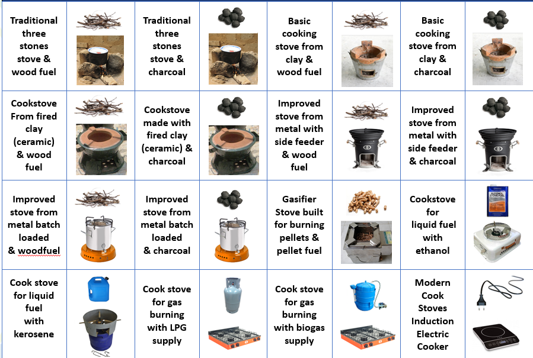
Figure 2. Cooking Stove Options Compared in V1 of RERT
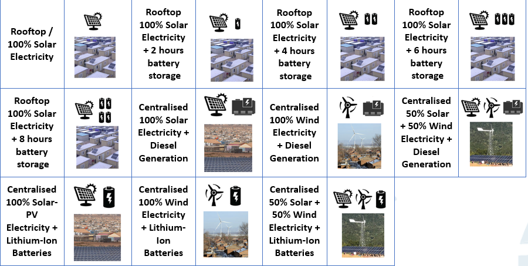
Figure 3. Household/Family Electricity Supply Options Compared in V1 of RERT
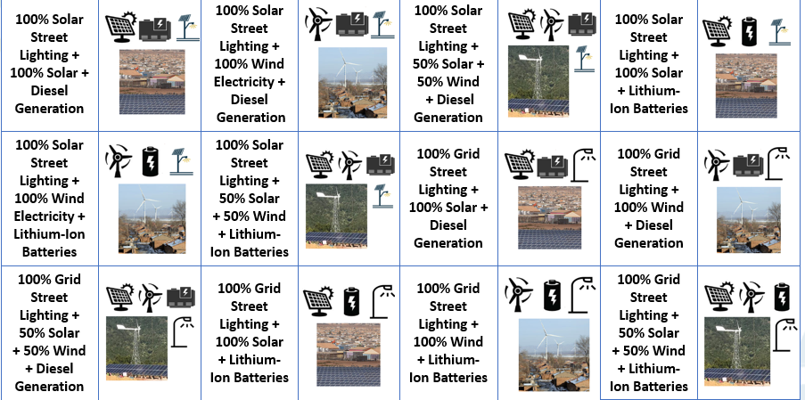
Figure 4. Camp Community/Institutions Electricity Supply Options Compared in V1 of RERT
Translation of cooking fuel demands into a load profile
The calculation of cooking fuel demand and supply was described in section 2 under the cooking energy use section. In brief the demands are based on the population in the camp, the stove distribution, the type of fuels used in the stoves, and use duration, stove efficiency and capacity parameters. The calculation results in the aggregate fuel use in the camp. To calculate new fuel supply needs the tool estimates what the requirements are for different type of stove options (16 in total as mentioned above. Based on the assumption that each family/household will utilise one stove type as a simplification, with multiple fuel options.
Translation of household/family electricity demands into a load profile
To evaluate the electricity supply options for households/families the electricity use needs to be translated from energy usage in kWh into a power demand profile requirement in watts per hour, E_{j,t}^{d}. An aggregate approach is utilised based on which total electricity use is superimposed on the same electricity use pattern by category.
Three different categories are utilised:
Low appliance household/Family electricity use pattern, who do not utilise any appliances beyond mobile phones and lighting
Medium appliance household/Family electricity use pattern, who own and use a television and/or an electric radio.
High appliance household/Family (with a business) electricity use pattern, who own and use the above as well as an electric washing machine or a small food fridge or an electric fan or combinations of the three.
The divisions of electric appliances are based on the ownership questions posed to the user. For each of the three household/family categories a different electricity use load profile is applied and superimposed on total electricity use. The profile determination builds upon the data in Blodgett et al. (2017) with combined energy use surveys and measured data from SteamaCo mini-grids of 176 households in Kenya.[20] Load profile data is also available in Hartvigsson and Ahlgren (2018) but here it is based on only survey data to elicitate time of use information from 47 households in Tanzania, which is less reliable.[19] The analysis in Blodgett et al. (2017) yields three user types, “night users” that utilise their electricity mostly from 18:00 to 24:00, “day users” that utilise their electricity mostly from 08:00 to 20:00, and “mixed users” that utilise about 60% of their electricity in the evening and 40% during the day (see Figure 3 below). Day users are mostly businesses and mixed users are mostly mixed business/households.[20]
In the simulation the low and medium appliance household/family users the profile from Blodgett et al. (2017)[20] for day user groups is applied, whilst for the high appliance household/family users the mixed user group profile is applied.
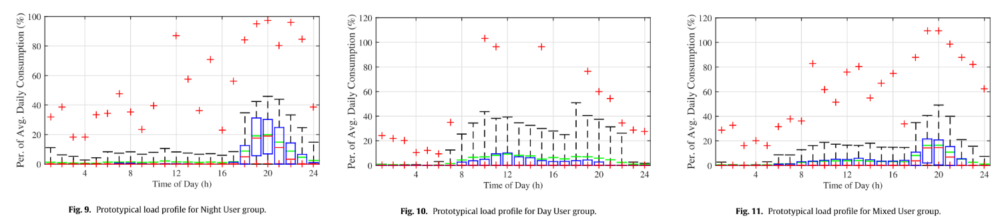
Figure 5. Load profiles for night users (left), day users (middle), and mixed users (right).
Figure adapted from Blodgett et al. (2017) [20]
Translation of community/institutional electricity use into a load profile
Similar to the households/family’s evaluation, the community/institutional electricity use needs to be translated from energy usage in kWh into a power demand profile requirement in watts per hour, E_{j,t}^{d}. To this end an aggregate approach is utilised based on different types of energy uses that are distributed over hourly slots across the day. The estimations are carried out by informed assumptions that can be adjusted by the tool user as required. The following standard assumption are made:
Water pumping energy use, distributed from 07:00 in the morning until the end of the evening at 23:00.
Building Heating energy use, distributed from 00:00 at night until 05:00 in the morning.
Building Cooling, distributed from 14:00 in the afternoon until 01:00 in the morning.
Street Lighting, varying by energy access tier from 19:00 until 21:00, 23:00 or later in the night.
Community Cooking, distributed from 08:00 to 10:00 in the morning, 13:00 to 15:00 in the afternoon, and 19:00 to 21:00 in the evening.
Note that in case buildings are not assigned to have heating or cooling by the user, or if no community cooking takes place, these values will amount to zero in the calculations.
Energy Supply – Electricity for Household/Family and Institutional/Community needs
The nameplate capacity, C, required to provide electricity supply E^{l} per year was calculated for fuel stock based generation options based on the facility lifetime t = 1,2,\ldots l, the capacity factor of the power generation unit, f, and the degradation \sigma of the annual capacity factor, using:
C_{j} = \frac{E_{j}^{l}}{(f_{j,t} - \sigma_{j,t}) 8760} (10)
Parameters for electricity supply options were taken from Kis et al. (2018).[29] In case of intermittent wind and solar-PV sources a different approach was taken to establish the required capacity. First, an hourly profile was generated using the Merra-2 Global dataset using the renewables ninja tool.2 In case of solar a zero tracking system was assumed with a system loss or performance ratio, \upsilon, estimated at an average of 80% based on real-life evaluations from tens of thousands of existing solar systems from the literature.[29] Second, a lithium-ion battery supply option is added where relevant, in order to meet the availability needs for the electricity supply in the evening.
Third, the generation source is scaled in terms of capacity to match the respective supply point output needs to meet demands. The scaling is done based on a three step procedure:
The maximum kWh among hourly loads of demand across the entire year is selected,
The value is multiplied by a factor, so as to minimize the lack of supply on sunless or windless days.
The selected factor for combined large scale (centralised) battery plus solar and/or wind system is selected at 1.2, to further oversize the system slightly and enable more constant power supply.
The selected factor for household/family solar-PV is set to 0.2, in case of solar-PV plus 2 hours of batteries it is set to 0.4, for solar-PV + 4 hours of batteries it is set to 0.6, and for solar-PV plus 6 and 8 hours of battery it is set to 1. The scaling is selected to be closer to average (instead of maximum loads) to optimise costs, and gradually increase with battery systems included, as without batteries oversizing the solar-PV system is on average not helpful in case of sun-less days.
The result value is divided for each generation type (solar, wind) by the maximum average hourly supply load in kWh provided by 1 kW of capacity, localised for the particular camp from the hourly profile using the renewables ninja tool.
The end result of this procedure is the number of kW of solar-PV or wind power generation that is required to meet demand loads in aggregate. In case of households/family needs the total generation can be divided by the number of families to obtain per household capacity requirement.
In case of scenario’s where solar and/or wind generation is complemented with diesel generation, the diesel generation is scaled to meet the missing maximum load per hour. Thereby all demands can be met at all time.
In case of scenario’s of combined battery systems with centralised solar and/or wind generation the capacity of the battery systems is set equivalent to the generation capacity, and subsequently scaled by a factor 1.5 for community/institutional use, and a factor 2 for household/family use.
Battery capacity for household/families with solar-PV plus battery is based on the average evening time capacity requirement to meet demand from 18:00 plus additional hours (2 hours for the 2 hours of battery scenario until 20:00 4 hours for the 4 hour battery scenarios, and so forth).
2.4 Option Indicator calculations
2.4.1 Cooking – Indicators
The RERT tool v1 incorporates ten performance indicators for cooking solutions as presented in table 11, calculated for each of the 16 cooking solutions. The methodology on how they are calculated for each are discussed in this section by type of indicator: economic, environmental and health indicators.
Table 9. Indicators for Cooking Solutions
| No. | Scale | Indicators for Cooking Solutions | Unit |
|---|---|---|---|
| 1 | Camp | Investment cost for cooking interventions | Currency (as selected) |
| 2 | Camp | Total Monthly Cooking Fuel Cost | Currency (as selected) |
| 3 | Camp | Carbon Dioxide emissions per year | Tonnes |
| 4 | Camp | Annual area at risk from deforestation for woodfuel use | Km2 |
| 5 | Camp | Area used for providing woodfuel from plantations | Km2 |
| 6 | Household | Affordability of Cooking Fuel | Very low to Very High |
| 7 | Household | Monthly Cooking Fuel Cost | Currency (as selected) |
| 8 | Household | Cost of purchasing cooking stove | Currency (as selected) |
| 9 | Household | Carbon Dioxide emissions per family per year | Tonnes |
| 10 | Household | Health risk associated with cooking | Very low to Very High |
Cooking - Economic indicators
Generalised cookstove costings data including purchase cost, and fuel cost estimates and lifespan for 47 cookstoves are available from Vianello et al. (2016).[1] The approach incorporates location and currency specific data based on 2018 exchange rates, so as to make the calculations as localised as possible. The country and associated currency can be selected in the overview tab.
The investment cost for cooking interventions is based on the total cost of the cooking stoves for supplying these to all families in the camp as a one-off purchase. The monthly cooking fuel cost is based on the parameter for the price of fuel multiplied with the amount of fuel usage per month as estimated with user inputs, split out between households and total camp use for all families.
Affordability of cooking fuel is based on an estimate provided by the user of camp household incomes split into low income, medium income, and high-income households, and their % shares in the camp (for example, 70% low, 20% medium, 10% high income households), based on camp surveys or other estimates.
The user also needs to supply the average cost of a healthy food basket per month. Subsequently, the RERT tool calculates how much income would be left for each household type after subtracting the cost of food to the income level. Then it calculates what % of households would have sufficient income left to afford monthly cooking fuel based on remaining income, as an approximation of the affordability of cooking fuel.
Finally, the % share is categories among the very low to very high scale as follows:
Very low if less than 20% of households being able to afford cooking fuel.
Low if between 20% and 40% of households are able to afford cooking fuel.
Medium if between 40% and 60% of households are able to afford cooking fuel.
High if between 60% and 80% of households are able to afford cooking fuel.
Very high if more than 80% of households are able to afford cooking fuel.
Cooking Solutions - Air Pollution/Health indicators
The health risk from cooking solutions is a tiered indicator with five levels from very low, low, medium, high, to very high risks. The qualitative levels correspond to the IWA tiers for indoor-emissions (see Table 10 below). Each International Workshop Agreement (IWA) tier, as set by the clean cooking alliance, from 0 to 4 was utilised with 0 corresponding to very low and 4 corresponding to very high risks. Based on the statistical assessment using the database for cookstoves from the clean cooking alliance, and additional literature sources, as described in section 2, each of the 16 cookstove types in the tool were assessed on what their IWA tier level was ranked at based on the carbon monoxide emissions, and the fine particulate matter emissions, as these are directly related to health risks. As such, the RERT tool can identify how different cookstove solutions rank on IWA tiers, and thereby on the qualitative scaling from very low to very high risks.
Table 10. IWA Tiers for Cooking Solutions.
| IWA Tier | Thermal Efficiency (%) | Carbon Monoxide Emissions (gram/megajoule delivered) | Fine Particulate Matter Emissions (milligram/megajoule delivered) | Safety (score) | Durability (score) |
|---|---|---|---|---|---|
| 5 | \geq50 | \leq3.0 | \leq5 | \geq95 | <10 |
| 4 | \geq40 | \leq4.4 | \leq62 | \geq86 | <15 |
| 3 | \geq30 | \leq7.2 | \leq218 | \geq77 | <20 |
| 2 | \geq20 | \leq11.5 | \leq481 | \geq68 | <25 |
| 1 | \geq10 | \leq18.3 | \leq1031 | \geq60 | <35 |
| 0 | <10 | >18.3 | >1031 | <60 | >35 |
The approach provides for a robust simple means to categorise different stoves and assess their health risks in a transparent manner. A more detailed approach is the global burden of disease and exposure distribution method developed for Household Air Pollution (HAP).[30] An existing tool that includes this is the Household Air Pollution Intervention Tool (HAPIT).3
Cooking Solutions – Carbon Emissions indicators
The amount of carbon dioxide emissions E_{\text{ijk}}associated with cooking can be established based on a direct association of CO2 emissions, per unit of fuel consumed, as :
E_{\text{ijk}} = \ F_{\text{ijk}} \cdot \ \gamma_{\text{jk}} (13)
With \gamma_{\text{jk}} as a parameter to establish the carbon dioxide emissions in weight value per cookstove and fuel type weight that is burnt. Data for this parameter for 22 cookstoves with six fuel types was analysed by Jetter et al. (2012) as utilised in the tool.[31] The approach allows for calculating the carbon dioxide emissions per household/family and for the entire camp.
Cooking Solutions – Deforestation Risk indicators
The RERT tool includes two indicators related to biomass use and deforestation risk. The first, the annual area at risk from deforestation for woodfuel use, is estimated based on the calculated amount of woodfuel need either directly or from charcoal usage. The value is compared with the estimated biomass growth in tonne per km2 per year from different ecosystem types, including evergreen forest/rain forest, forest-savanna (Mosaic), deciduous forest, sparse forest (woodland), shrubland, and grassland/savannah. As such the total km2 that is at risk is provided as the amount of wood taken commensurate with the growth per year per km2. Values for tonnes per year were taken from [reference].
Second, the area used for providing woodfuel from plantations, based on the user inputs on whether either woodfuel or charcoal is provided by the camp management or other organisations sourcing from managed plantations. As well as the amount of woodfuel or charcoal is provided. It is assumed that the sourcing is based on eucalyptus plantations biomass growth per km2 per year, with a standard value from Ugande et al. (2001).[32] Thereby the total area used for providing plantation woodfuel is calculated, through estimating the amount supplied, and the area needed to grow this supply.
2.4.2 Household/Family Electricity & Lighting – Indicators
The RERT tool v1 incorporates 6 performance indicators for household/family lighting and electricity solutions as presented in table 11, calculated for each of the 11 solutions. The methodology on how they are calculated for each are discussed in this section by type of indicator: economic, availability, and environmental.
Table 11. indicators for Household Lighting and Electricity Solutions (decentralised)
| No. | Scale | Indicators for Cooking Solutions | Unit |
|---|---|---|---|
| 1 | Camp | Investment cost for household lighting and electricity | Currency (as selected) |
| 2 | Household | First three years Monthly total electricity cost including lighting per household with 3-year leasing of equipment | Currency (as selected) |
| 3 | Household | Affordability of Lighting and Electricity Options | Very low to very high |
| 4 | Household | Time availability of electricity and lighting (17:00 - 24:00) on average | Hours |
| 5 | Household | Time availability of electricity and lighting (24 hours) on average | Hours |
| 6 | Household | Lighting and Electricity Carbon Dioxide emissions per year | Tonnes |
Household/family lighting and electricity – Economic Indicators
The affordability indicators and investment cost indicators are calculated in a similar manner to the cooking solution indicators as described in section 5.1. In case of affordability, not the cooking solution cost, but the monthly electricity cost if the investment and operation for solar-PV and/or wind and/or batteries would need to be recouped over a three year period is selected based on dividing the investment costs over 3 years. This assumes that the equipment is leased to the households over a three year period.
In addition a new indicator is introduced that is related – First three years Monthly total electricity cost including lighting per household with 3-year leasing of equipment – which calculates the total monthly cost if the equipment would need to be fully costed by the household/family under a three year leasing scheme, based on i) the total investment cost divided into 36 portions covering 3 years x 12 months, the total operational and maintenance cost over a 12 month period, and any remaining diesel generation cost if diesel generators are part of the solution.
Household/family lighting and electricity – Availability indicators
The time availability indicators are based on comparing the demand and supply load profiles for electricity usage and how each technology solution provides or does not provide power during particular hours. Based on the comparison for each solution the availability from 17:00 to 24:00 is estimated, and that relative to a 24 hour period. As such the solutions that can provide as much evening time electricity (for cooking, lighting and other uses) and night-time electricity are ranked higher under these indicators.
Household/family lighting and electricity – Carbon Emissions indicators
The calculation is carried out in a similar fashion as the cooking solution carbon emission indicators, as described in section 5.1.
2.4.3 Household/Family Electricity & Lighting – Indicators
The RERT tool v1 incorporates 3 performance indicators for community/institutional electricity solutions as presented in table 12, calculated for each of the 12 solutions. The methodology on how they are calculated for each are discussed in this section by type of indicator: economic, and environmental.
Table 12. Indicators for Camp Lighting and Electricity Solutions (centralised)
| No. | Scale | Indicators for Camp Lighting and Electricity Solutions | Unit |
|---|---|---|---|
| 1 | Camp | Total lighting and electricity operational cost (max threshold) | Currency (as selected) |
| 2 | Camp | Total annual lighting and electricity Investment cost (max threshold) | Currency (as selected) |
| 3 | Camp | Total fuel combustion CO2 emissions per year (max threshold) | Tonnes |
Community/Institutional lighting and electricity – Economic Indicators
The investment cost and operational costs are standard indicators based on the aggregate investment cost for the 12 electricity supply solutions (e.g. combinations of solar-PV, wind energy, batteries, diesel generation), and estimated operational costs on an annual basis.
Household/family lighting and electricity – Carbon Emissions indicators
The calculation is carried out in a similar fashion as the cooking solution carbon emission indicators, as described in section 4.1.
2.5 Energy Access Tiers, Threshold Grouping & Ranking Calculations
Energy Access Tier Calculations
After electricity demands for the current baseline are established as per the calculations above, the current Energy Access Tiers are calculated (see ESMAP (2015)[33]. The ESMAP energy access tiers framework defines different Energy Access Tiers based on a series of tables/matrices. Five areas of energy access are considered for households/families: electricity services, lighting, cooking, heating, and street lighting.
The calculation in the RERT tool is carried out by comparison of the distribution of energy use technologies/infrastructures for each area, and the extent to which it matches with the first 3 tiers of energy access, using a set of if-then matching rule, based on pre-estimated qualities that indicate whether an option meets a particular tier. The if-then matching rules are defined at an abstract level as:
\ If\ for\ Energy\ option\ j\ service\ the\ service\ and\ availability\ is\ met\ for\ Tier\ X,\ \text{set\ the\ Energy\ Access\ Tier\ to\ X}\ for\ the\ \%\ of\ the\ population\ using\ option\ j.
After the current Energy Access Tiers are calculated, each potential technology solution can be compared against the current baseline situation. To this end each technology solution has been identified at which energy-access tier level it can be rated in a pre-defined way, by assessing the performance capabilities for that solution and how it fits with providing the related energy access tier. For example, a gasifier cooking stove using pellet supply is ranked at energy access tier 3 for cooking, given the limited time needed to acquire fuel (pellet fuel is sold or provided directly), the minor amount of stove preparation time in filling the stove and lighting it, less than 5 minutes, and the associated low PM and carbon monoxide emissions. The approach allows the RERT tool to identify which energy access tiers are associated with each solution, for comparison and selection purposes.
The energy access tiers are in the tool related to a user selection of which tier the solutions should attain, such that the three recommended options fit as closest as possible to the required tier improvement. The user to this end can select four options, Current Average Tier, Tier 1, Tier 2 or Tier 3 for the solution requirement (see Figure 6).
Figure 6. An overview of the interface where Energy Access Tier Requirements for the Technology Solutions are set by the user.
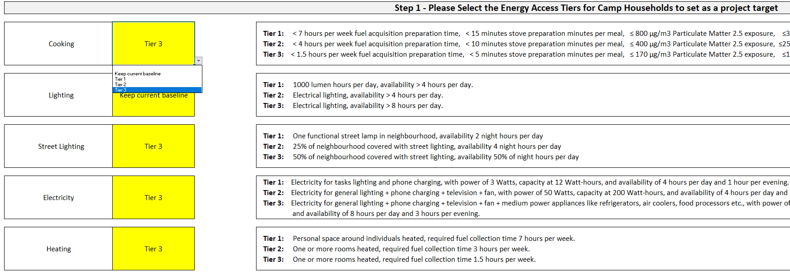
Table 13. Tiers of Household Energy Access based on ESMAP values. Source: ESMAP (2015)[33]
| Metric | Tier 1 | Tier 2 | Tier 3 | |
|---|---|---|---|---|
| Electricity | Services | Task lighting, phone charging | General lighting & phone charging & television & fan (if needed) | Tier 2 + ANY medium power appliances (refrigerator, air cooler, food processor, water pump, rice cooker). |
| Power | 3 Watts | 50 Watts | 200 Watts | |
| Capacity | 12 Wh | 200 Wh | 1 kWh | |
| Availability | 4 hours per day, 1 hour per evening | 4 hours per day, 2 hours per evening | 8 hours per day, 3 hours per evening | |
| Lighting | Service per person | 1000 lumen hours per day | Electrical lighting | Electrical lighting |
| Availability | >4 hours per day | >4 hours per day | >8 hours per day | |
| Cooking | Fuel acquisition preparation time | <7 hours per week | <3 hours per week | <1.5 hours per week |
| Stove preparation time | <15 minutes per meal | <10 minutes per meal | <5 minutes per meal | |
| PM2.5 Exposure (\mug/m3) | \leq800 | \leq400 | \leq170 | |
| CO Exposure (mg/m3) | \leq35 | \leq25 | \leq18 | |
| Health Risk* | Tentatively 60% higher long-term mortality than level 5 | Tentatively 45% higher long-term mortality than level 5 | Tentatively 30% higher long-term mortality than level 5 | |
| Heating | Capacity | Personal space around individuals heated | One or more rooms heated | One or more rooms heated |
| Convenience / fuel collection time | 7 hours per week | 3 hours per week | 1.5 hours per week |
*Health risk is relative to tier 5 which is the “lowest level above which total cardiopulmonary and lung cancer mortality increases in response to PM2.5
Table 14. Tiers of Community Energy Access based on ESMAP values. Source: ESMAP (2015).[33]
| Metric | Tier 1 | Tier 2 | Tier 3 | |
|---|---|---|---|---|
| Street lighting | Capacity | 1 functional street lamp in neighbourhood | 25% of neighbourhood covered | 50% of neighbourhood covered with street lights |
| Availability | 2 night hours / day | 4 night hours per day | 50% of night hours per day |
Calculating the three recommended options
The aim of the three recommended option process is to select the best scoring options within the user selected energy access tiers. To evaluate the three recommended options a two-step procedure is provided. First, the scoring of each technology solution across performance indicators is calculated. To do so a relative ranking is made for each technology option. In case there are 16 options therefore there will be a scoring of 1 to 16 points (16 the highest, 1 the lowest).
In mathematical terms the ranking can be described as having a number of options \j = 1,2,\ldots,n, with an integer value assigned based on the relative quantitative ranking between options. The best indicator scoring received the highest number, and the lowest indicator the lowest number. The total number of points that can be awarded in case of 16 options and ten performance criteria is therefore 160 points (16 x 10). See figure
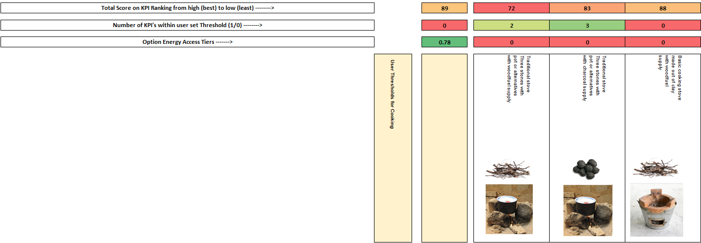
Figure 7. Scoring of different solutions visible to technical users
In case of qualitative indicators a ranking value R_{j} is assigned using a value assignment depending on the number of categories within the indicators, whereby:
\ R_{j} = \left\{ \begin{matrix} \frac{1}{8}\ \text{n\ \ \ }\text{if\ }\text{ranking\ is\ low\ \ \ \ \ \ \ \ } \\ \frac{4}{8}\text{n\ \ \ if\ }\text{ranking\ is\ medium} \\ \frac{7}{8}\text{n\ \ \ if\ }\text{ranking\ is\ high\ \ \ \ \ \ \ \ } \\ \end{matrix} \right. (14)
And
\ R_{j} = \left\{ \begin{matrix} \frac{2}{16}\ \text{n\ \ \ }\text{if\ }\text{ranking\ is\ very\ low\ \ \ \ \ \ \ \ } \\ \frac{5}{16}\ \text{n\ \ \ }\text{if\ }\text{ranking\ is\ low\ \ \ \ \ \ \ \ \ \ \ \ \ \ \ \ \ \ \ \ \ } \\ \frac{8}{16}\text{n\ \ \ if\ r}\text{anking\ is\ medium\ \ \ \ \ \ \ \ \ \ \ \ \ } \\ \frac{11}{16}\ \text{n\ \ \ }\text{if\ }\text{ranking\ is\ high\ \ \ \ \ \ \ \ \ \ \ \ \ \ \ \ \ \ \ } \\ \frac{14}{16}\text{n\ \ \ if\ r}\text{anking\ is\ very\ high\ \ \ \ \ \ \ \ \ \ } \\ \end{matrix} \right. (15)
Second, out of the ranking the options are selected that are at or closest to the Energy Access Tier that is selected by the user (1, 2, or 3). The best scoring options within the selected energy access tier are selected as the top three recommended solutions (see Figure 8 below). The total scoring is displayed as a ranking for each option alongside the results, so as to compare between options within the recommended group and the non-recommended group of options.
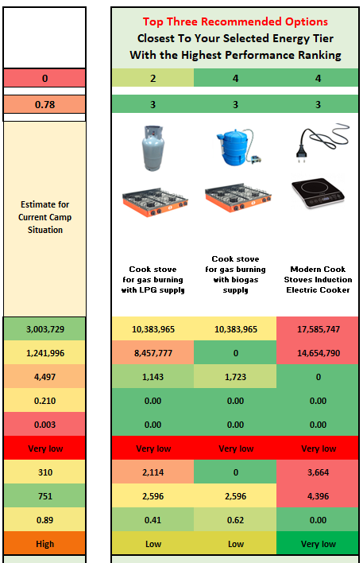
Figure 8. Top Three Recommended Options Result Example
Threshold Ranking per Option
In addition to selecting the energy access tiers and the ranking for option performance the user also can select a series of minimum or maximum thresholds for each performance indicator across cooking, household/family electricity & lighting, and/or community/institutional lighting. The threshold gives a scoring for a solution when it either surpasses or falls below an energy solution design criteria.
A scoring of 0 or 1 is assigned to each performance criteria, such that if there are 10 performance indicators like for cooking solutions, an individual solution can at maximum have a score of 10, and at minimum a score of 0. This allows for a ranking of how well each solution performs against each-other by user set criteria. Eeach indicator thus has an equal weight.
The process is similar for quantitative and qualitative indicators, given that qualitative indicators range from low to high, or from very low to very high. Thereby a bigger or lower than comparison can be made to establish which binary value to assign.
The ranking is displayed for each option so that the user can understand how well each option performance based on the design needs. The ranking provides a similar solution idea to the more precise performance ranking as explained above. And helps users understand how well the options fit within their specific camp solution needs.
2.6 References
[1] Vianello, M. A Review of Cooking Systems for Humanitarian Settings. Mov. Energy Initiat. May (2016).
[2] Corbyn, D. & Vianello, M. Prices , Products and Priorities Meeting Refugees ’ Energy Needs. January 74 pages (2018).
[3] Barbieri, J., Riva, F. & Colombo, E. Cooking in refugee camps and informal settlements: A review of available technologies and impacts on the socio-economic and environmental perspective. Sustain. Energy Technol. Assessments 22, (2017).
[4] Still, D., Bentson, S. & Li, H. Results of Laboratory Testing of 15 Cookstove Designs in Accordance with the ISO/IWA Tiers of Performance. Ecohealth 12, 1 (2015).
[5] MacCarty, N., Still, D. & Ogle, D. Fuel use and emissions performance of fifty cooking stoves in the laboratory and related benchmarks of performance. Energy Sustain. Dev. 14, 3 (2010).
[6] Johnson, M. A. & Chiang, R. A. Quantitative guidance for stove usage and performance to achieve health and environmental targets. Environ. Health Perspect. 123, 8 (2015).
[7] Ruiz-Mercado, I., Canuz, E. & Smith, K. R. Temperature dataloggers as stove use monitors (SUMs): Field methods and signal analysis. Biomass Bioenergy 47, (2012).
[8] Bentson, S., Still, D., Thompson, R. & Grabow, K. The influence of initial fuel load on Fuel to Cook for batch loaded charcoal cookstoves. Energy Sustain. Dev. 17, 2 (2013).
[9] Pillarisetti, A. et al. Patterns of stove usage after introduction of an advanced cookstove: The long-term application of household sensors. Environ. Sci. Technol. 48, 24 (2014).
[10] Business Innovation Facility. Off-grid lighting and phone charging study A snapshot of household technologies, habits and expenditure in Malawi. August (2016).
[11] Mills, E., Tracy, J. L., Alstone, P., Jacobson, A. & Avato, P. Low-cost LED flashlights and market spoiling in Kenya’s off-grid lighting market. Energy Effic. 8, 2 (2015).
[12] Mills, E. Technical and economic performance analysis of kerosene lamps and alternative approaches to illumination in developing countries. Lawrence Berkeley Natl. Lab. (2003).
[13] Grimm, M., Anicet, M., Jorg, P. & Maximiliane, S. A First Step up the Energy Ladder? Low Cost Solar Kits and Household’s Welfare in Rural Rwanda. (2014).
[14] Maina, S. Africa’s Most Popular Smartphones Show a Budding Love for Budget Devices. Techweez (2017). Available at: http://techweez.com/2017/09/08/africa-most-common-smartphones/.
[15] Stojanovski, O., Thurber, M. & Wolak, F. Rural energy access through solar home systems: Use patterns and opportunities for improvement. Energy Sustain. Dev. 37, (2017).
[16] Phadke, A. A. et al. Powering a Home with Just 25 Watts of Solar PV. Super-Efficient Appliances Can Enable Expanded Off-Grid Energy Service Using Small Solar Power Systems. (2015). doi:10.2172/1229861
[17] GIZ. Photovoltaics for Productive Use Applications. 252 pages (2016).
[18] Global Leap, Energy, C. & Dalberg. The State of the Global Off-Grid Appliance Market. 37 pages (2017).
[19] Hartvigsson, E. & Ahlgren, E. O. Comparison of load profiles in a mini-grid: Assessment of performance metrics using measured and interview-based data. Energy Sustain. Dev. 43, (2018).
[20] Blodgett, C., Dauenhauer, P., Louie, H. & Kickham, L. Accuracy of energy-use surveys in predicting rural mini-grid user consumption. Energy Sustain. Dev. 41, (2017).
[21] Shehaded, N. H. Sustainable Street Lighting: A Guide to Efficient Public Street Lighting for Lebanon APublication. 57 pages (2015).
[22] Atalla, T., Gualdi, S. & Lanza, A. A global degree days database for energy-related applications. Energy 143, April (2018).
[23] Sarak, H. & Satman, A. The degree-day method to estimate the residential heating natural gas consumption in Turkey: A case study. Energy 28, 9 (2003).
[24] Lamptey, F. Determination of domestic water consumption pattern in Accra. (2010).
[25] Cronin, A. A. et al. A review of water and sanitation provision in refugee camps in association with selected health and nutrition indicators – the need for integrated service provision. J. Water Health 6, (2008).
[26] Shrestha, D. & Cronin, A. A. The right to water and protecting refugees. Waterlines 24, 3 (2006).
[27] Fraenkel, P. & Thake, J. Water Lifting Devices: A Handbook. . FAO and Intermediate Technological Publications 337 pages (2006).
[28] Conlon, T. & Weisbrod, G. We ’ ve Been Testing Water Pumps For Years- Has Their Efficiency Changed ? 583–594 pages (1996).
[29] Kis, Z., Pandya, N. & Koppelaar, R. H. E. M. Electricity generation technologies: Comparison of materials use, energy return on investment, jobs creation and CO2emissions reduction. Energy Policy 120, October 2017 (2018).
[30] Burnett, R. T. et al. An integrated risk function for estimating the global burden of disease attributable to ambient fine particulate matter exposure. Environ. Health Perspect. 122, 4 (2014).
[31] Jetter, J. et al. Pollutant emissions and energy efficiency under controlled conditions for household biomass cookstoves and implications for metrics useful in setting international test standards. Environ. Sci. Technol. 46, 19 (2012).
[32] Ugalde, L., Perez, O. & Mead, D. J. Forest Plantations Thematic Papers: Mean Annual Volume Increment of Selected Industrial Forest Plantation Species. 27 pages (2001). doi:10.1017/S0020818300006160
[33] Bhatia, M. & Angelou, N. BEYOND CONNECTIONS Energy Access Redefined. 244 pages (2015).